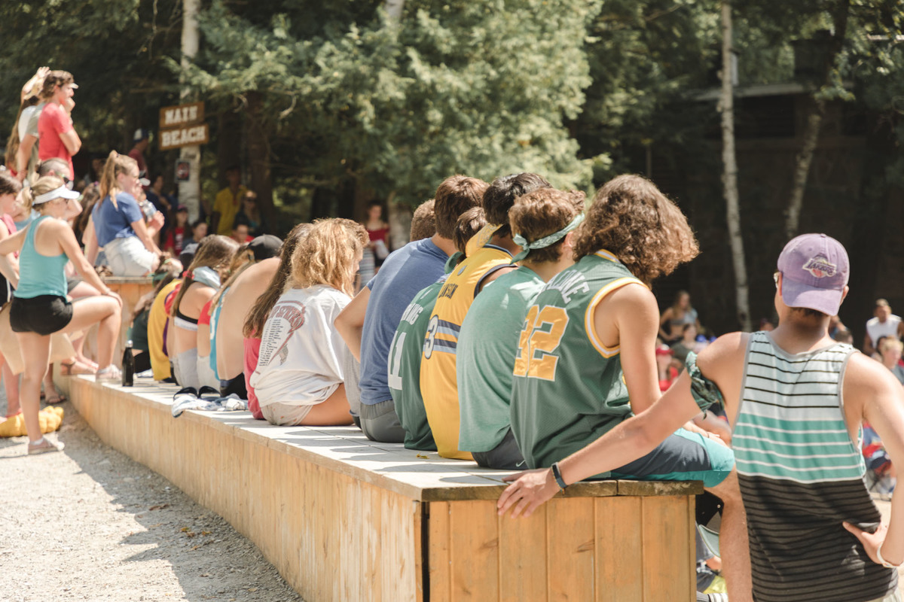
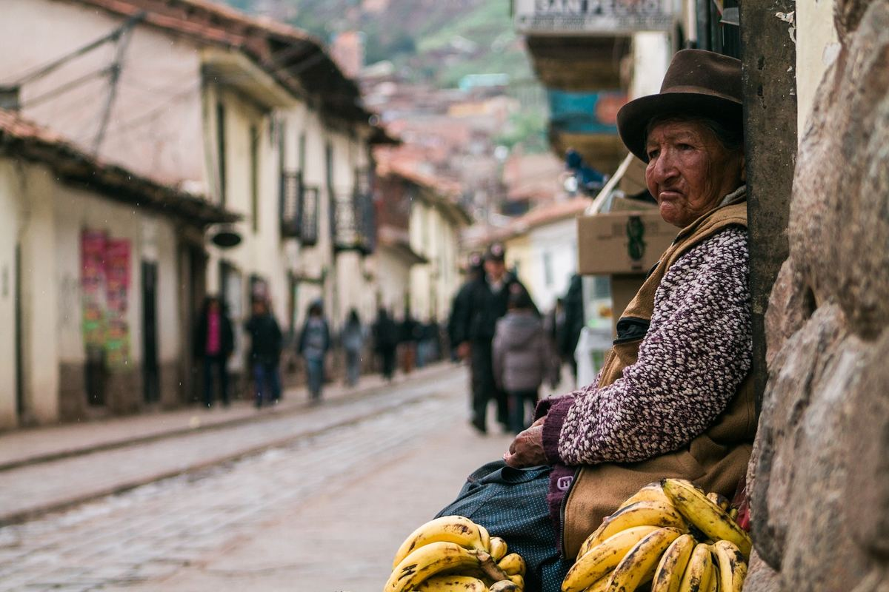

Why should I travel?
Everyone has asked themselves this question - you’ve probably thought about it yourself. My own travel experiences have proven to me that there’s nothing more exhilarating than exploring new destinations. Travel has taught me that getting out into the world can change your life in the best, most unexpected ways.
We all have our own reasons to travel. Some explore with reckless abandon, and go wherever the wind blows them. For others, the thought of diving into the unknown can be a pretty scary thought. So, why travel?
But it doesn't have to be.
There’s a whole wide world out there, and it contains so many unknowns - but we all only get one life. I believe that we should travel the world while we have the chance. If you’re just starting to think about why you should travel, or you're looking for reasons to travel, then I’m here to help. Here are the top 10 reasons why you should travel the world.
1. You'll make new friends from all over the world
Making connections to people all over the world is easily at the top of my list of why people should travel.
You’ll make great friends from around the globe and you’ll get to see things from different perspectives. For mosy who ask 'why travel', seeing new places is very closely followed by the people you meet. You’ll keep in touch with them over time, and they might even let you stay at theirs the next time you get itchy feet! You'll have the opportunity to visit their home turf, to see their way of life like no other tourist would. They’ll want to show you their world, and luckily for you, you'll get to see it through the eyes of the locals. Just make sure to return the favour!
2. Expand your horizons
You can stay in your little corner of the world, or you can experience millions of other ways to live. Truly authentic travel experiences can open your mind to life’s endless possibilities. Travel allows us to do away with ignorance and prejudice, and find common ground with people who might appear to be very different from us. When you explore other countries, you start to understand why the people there might do certain things or act in certain ways. One of the most amazing things that I found out through travelling is that strangers are, more often than not, willing to help when you ask them for it.
3. Travel builds character

The more you see of the world, the more you’ll realize how it really works. You’ll learn so much about yourself along the way, and your organizational skills will be sharpened as you try to make the most of your time in a new place. You’ll be challenged to figure things out along the way, like where to sleep or how to use transit in new cities. It will make you wiser and more open to opportunities, and you’ll prove to yourself that you can handle anything.
4. Breaking the ice becomes easier
Discovering new cultures and people from all over the world developed my confidence more than anything else. If you’re a person who struggles to be outgoing, travel will help you overcome that. When you travel, you’ll interact with so many different people that any insecurity you have will slowly erode. You’ll suddenly have stories to tell, and finding common ground with total strangers will be easy.
5. You’ll see amazing new things
You could read about the Wonders of the World online, or you can go and see them with your own eyes. Wherever you go, you’ll find incredible new things to marvel at - whether it’s the Niagara Falls, the Great Wall of China, or the pyramids of Egypt, you’ll be in awe at the magnificence of our planet. If you fancy a good picture or two for your Instagram, you’ll have no trouble finding it out in the world.
When you come back home, you'll be proud of yourself, and grateful to yourself for leaving no experience behind. Trust me, it’s much better than looking at a computer screen.
6. Try new foods
Travelling is hungry work. You’ll probably be moving around a lot, so finding great restaurants and trying out new dishes will become your favourite pastime. You just can't beat the feeling of finally sinking into a chair after a busy day of exploring, and being served up a big plate of whatever you fancy. Don’t be afraid to give your taste buds a workout too - you might discover foods that you didn’t even know you liked.
Speak to locals to find out how they cook certain dishes, and what ingredients they use. If you ever want to remember your favourite sights and sounds from travelling, you can use similar ingredients to cook up something new! Use the tastes and smells to remind you of your travel experiences, and take them with you wherever you go.
7. Happiness

If you’re wondering why you should travel, reasons might include increased happiness and a sunnier disposition. Want proof? Ask anyone how their last vacation was, and watch how their eyes light up.
Travelling makes people happier, because it makes you grow. Your mind is stretched, your perceptions are challenged, and your perspectives change for the better. Your experiences can define your reality - what better way to shape your life than by experiencing all that the world has to offer? Once you go on your first trip, you’ll be hooked, and you’ll be better for it.
8. Live in the now
You can’t help but to enjoy living in each moment when you’re travelling. You won’t have time to dwell on the past, or worry about the future. You'll be seeing so many new, amazing things, you’ll find that you really love just living in the present. You get to be fully in charge of each decision you make - if you want to stay in a country a few extra days, why not? If you want to go skydiving, or stay up all night and watch the stars, who’s gonna stop you? It’s your time to shine - learn to enjoy each moment, and make every opportunity count.
9. Learn new languages
Language is the most powerful tool ever invented - our understanding of the world depends on our ability to describe it. Some languages have words that can not be translated to english. For example, “Fernweh” in German, “Yūgen” in Japanese, or “Solivagant” in Latin. By learning a new language, you could experience a feeling you never knew you existed.
During your travels, you may only learn a few phrases - a simple “please” and “thank you”, or a “where is the bathroom?”. You might not be fluent, but learning these phrases in the local language are guaranteed to come in handy. The more you learn, the more you’ll be able to communicate with an entirely new group of people.
10. Discover your inner self-confidence
If you’re still asking yourself “why should I travel?”, getting out into the world will help you stop questioning yourself. The above reasons to travel help highlight the beauty that is out there if you look for it. You’ll be in a new place, without the usual comforts of home - but you’ll be surprised at just how fast you adapt. You’ll be able to explore new places and cultures, and discover the different ways that people live around the globe. You’ll discover as much about yourself as you do about the world - your confidence will grow, and you’ll realize how capable you are of taking charge and getting out into the world. You might even discover something you’re truly passionate about, and take your life in an entirely new direction. So, if you're still asking 'why travel"; why? If there’s one reason to travel, this is it.